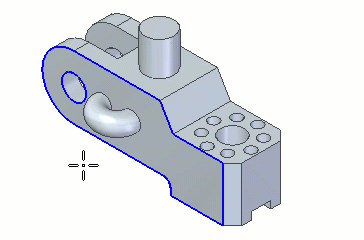

Place a center axis on a cylinder or hole feature
You can place a PMI center axis on 3D hole features or cylindrical features.
-
Choose the PMI tab→Annotation group→Centerline command
 .
. -
On the command bar, click Center Axis .
-
Select a circular edge or surface on a hole, conical feature, or a cylindrical feature to create the center axis.

You can also select revolved, extruded, torus, concentric, and swept surfaces.
How do I
Automatically create centerlines and center marks in a drawing viewAutomatically remove centerlines and center marks from a drawing view
Place a center mark
Place a centerline midway between two lines
Place a centerline on a slot
Example: Dimension a curved slot
Place a bolt hole circle
Learn more
Centerlines, center marks, and bolt hole circlesLook up more details
Automatic Centerlines commandAutomatic Centerlines command bar
Centerline and Center Mark Options dialog box
Center Mark command
Center Mark command bar
Centerline command
Centerline command bar
Center Line and Center Mark Properties dialog box
Bolt Hole Circle command
Bolt Hole Circle command bar
Bolt Hole Circle Properties dialog box